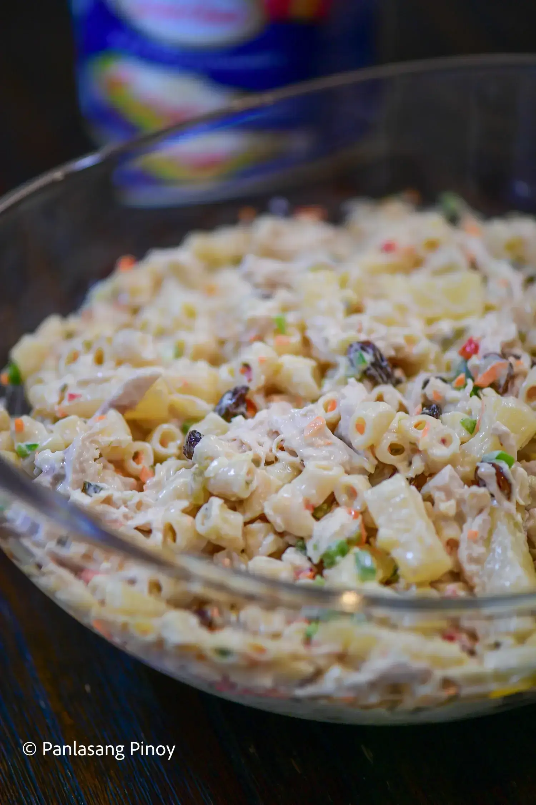
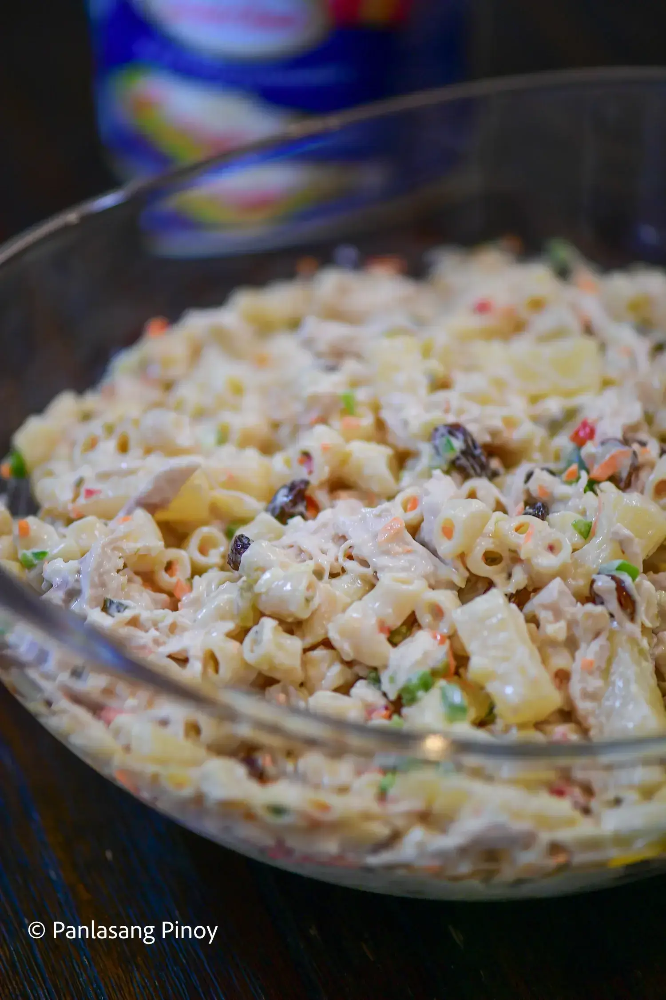

Food for the Day: How to cook Pork Sinigang
Ingredients:
- 1 kg. Pork
- Water, for boiling
- 8 Cups Water
- Blanch Pork Bones
- 2 pc. Onion
- 3 Tomatoes
- 2 pc. Fresh Taro
- 1 pc. Radish
- 1 bunch of Ladies’ Fingers (Okra)
- 2 pc. Eggplant
- 1 bunch of Long Beans
- 4 cups Fresh Tamarind
- 2 bunch of Water Spinach
- 2 pc Green Chillies
- Fish Sauce
Instructions:
- Boil pork with onion and tomato in water. Skim off any foam. Simmer until pork is tender (about 45 minutes).
- Add tamarind flavor (use sinigang mix or fresh tamarind juice).
- Add vegetables:
Radish (cook 5 minutes)
Then eggplant and string beans (cook another 5–7 minutes)
- Season with salt or fish sauce. Add green chilies.
- Add water Spinach
- Serve hot with rice